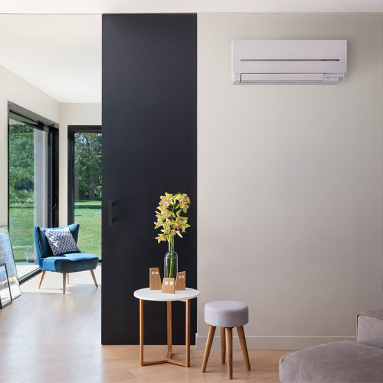
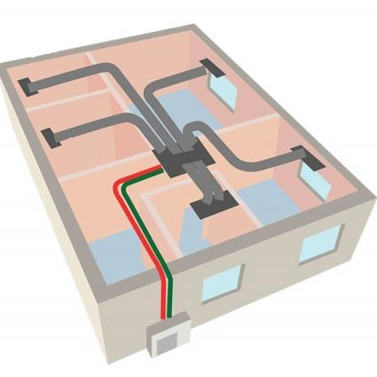
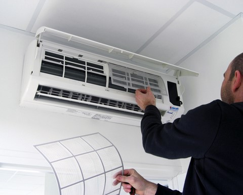

Depuis plus de 10 ans, la climatisation est mon secteur d'activité.
En tant qu'entrepreneur expérimenté et soucieux de votre confort je
réalise l'installation, l'entretien et le dépannage de votre système
de climatisation.

Un système de climatisation de type split se compose d'un
groupe exterieur et de une (monosplit) ou plusieurs unités
intérieures (multisplit).
L'emplacement des unités intérieures est importante pour garantir une bonne répartition de l'air conditionné dans vos pièces.
Je vous conseille sur les emplacements tout en prenant en compte vos préférences pour l'esthétique intérieur et extérieur. Précautions d'installation
L'emplacement des unités intérieures est importante pour garantir une bonne répartition de l'air conditionné dans vos pièces.
Je vous conseille sur les emplacements tout en prenant en compte vos préférences pour l'esthétique intérieur et extérieur. Précautions d'installation

Un climatiseur gainable est composé d'un groupe extérieur et
une unité intérieur dissimulé dans les combles qui va
distribuer l'air conditionné au travers un réseau de gaines
dans les différentes pièces. Seule une bouche de soufflage
sera apparente dans chaque pièce souhaitée et une grille de
reprise sera installée pour l'air entrant.
Ce système plus esthétique est idéal pour climatiser plusieurs pièces en même temps si vous disposez de combles ou faux plafond.
Ce système plus esthétique est idéal pour climatiser plusieurs pièces en même temps si vous disposez de combles ou faux plafond.

Une panne de votre système de climatisation peut être
caractérisée par :
Un entretien régulier permet de prolonger la durée de vie de votre installation et de prévenir les pannes. Pour votre confort, chaque entretien est constitué de :
- Un fonctionnement par intermittence
- Des mauvaises odeurs
- Des bruits inhabituels
- Des voyants clignotants ou éteints
- Des fuites de liquide
- Des dysfonctionnements de la télécommande
Un entretien régulier permet de prolonger la durée de vie de votre installation et de prévenir les pannes. Pour votre confort, chaque entretien est constitué de :
- Nettoyage des prés filtres
- Dépoussiérage de l'échangeur intérieur et extérieur
- Traitement de l'échangeur intérieur et extérieur avec produits anti bactériens et désodorisant
- Nettoyage du bac à condensation
- Nettoyage de la volute
- Resserrage et dépoussiérage des causses électriques intérieur et extérieur
- Contrôle des pressions et températures
- Mesure des performances énergétiques
- Nettoyage des caches plastiques intérieur

Matthias Pichard
7 rue du Jeu de Boules
34110 Vic la Gardiole
06.71.97.83.46
matth34750@gmail.com
N° SIRET 88452690600018
7 rue du Jeu de Boules
34110 Vic la Gardiole
06.71.97.83.46
matth34750@gmail.com
N° SIRET 88452690600018